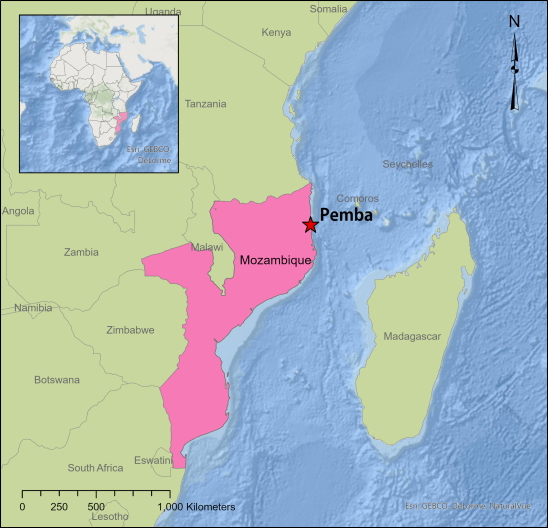
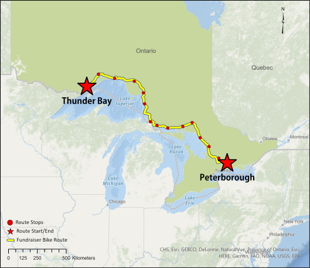

The Liberty Project is a non-profit in Pemba, Mozambique. Mozambique is located on the southeast coast of Africa and Pemba is a port city located in northeastern Mozambique. The established non-profit works to raise awareness and support for the women of Pemba who have been sexually exploited, abused, and culturally oppressed.
The project was brought to the team in response to the Client planning a new fundraising initiative, a bike fundraiser, Ride 4 Freedom, happening August 2021 in order to raise funds for the nonprofit and continue to support the women of Pemba, Mozambique. Although The Liberty Project is based out of Pemba, Mozambique, the bike fundraiser is being hosted in Ontario as the Board Chair of the nonprofit, is based out of Ontario, Canada and is the one organizing and hosting the fundraising event.
The Liberty Project required a digital platform to increase awareness about their multi-day bike fundraising event and to encourage donations and registration for the event as well as and develop a database for donor information, all which work towards supporting the nonprofit and the affected women in Mozambique.
The team at Vanritto developed a two-part solution using free tiering and existing Client software:
(1) An interactive event webpage integrated into The Liberty Project’s website on Squarespace with an interactive scrolly story web map, the ability to donate and register to the event, live tracking of participants on the event route, and the integration of the organization’s social media for live updates about the event.
(2) An Access database system to manage donor and registrant information with a custom Graphic User Interface (GUI) and data transfer process.
The area of study for this project encompasses a designated bike route and stop locations from Thunder Bay to Peterborough, Ontario. The route is approximately 1,400 kilometres and will be divided into individual segments which will be 60-100+ kilometres each. The route starts at Marina Park, Thunder Bay, and ends at Market Hall Performing Arts Centre in Peterborough, Ontario. There are thirteen designated start and end locations along the designated ride segments for each day of the bike event. Due to COVID-19 travel restrictions in Ontario, the event has moved completely online and event registrants will complete the route virtually. Participants will be able to track their rides that they do from home where the distance completed will equal distance along the route.
